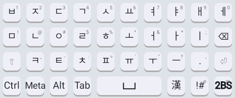
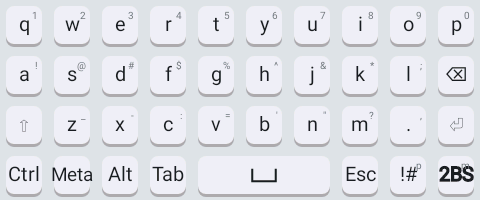
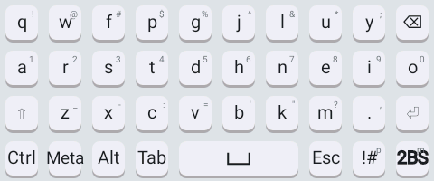
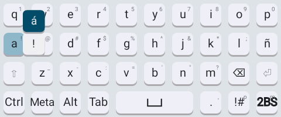
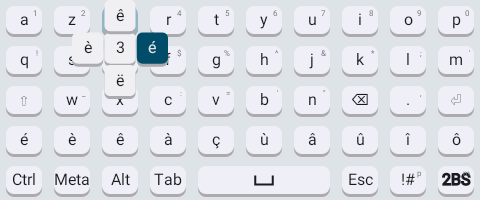
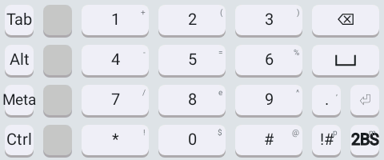
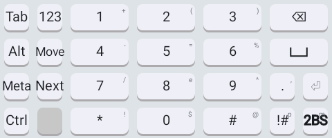
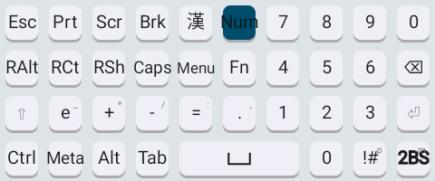

6 Layout
The touch layout is one orthogonal ten-column grid with equal keys and no staggered rows. The bottom row is the same on every page of the full-size layouts: Ctrl · Meta · Alt · Tab · space · !# · 한글, with space three columns wide. The menu and the keypad page do not have keys of their own — they are opened by holding the layout key and !#, which say so with a small m and p in the corner. One cell is left over beside !#. Each layout puts what its own users reach for there: 漢 for Hanja on 2-beolsik, Esc on QWERTY, Dvorak and Colemak — a real KEYCODE_ESCAPE, for vi over ssh — and nothing on the rest. The two 12-key pages keep the same frame in a different shape: the modifiers own the leftmost column, every Hangul key is two columns wide, and the right-hand column carries backspace, space, then the period and Enter, with !# and the layout key closing the bottom row. The cell beside Tab carries 漢 on both of them while Hangul is being typed, which converts on a tap; under an overlay there is no reading to convert, so the cell is left empty there. Shift is one cell up, beside Meta, on both pads and whatever the overlay — tapped for one key (Shift+arrow selects) or held to stay down; a key that moved when the pad changed would be a key you had to look for. The two cells above it toggle what the twelve Hangul keys show: 123 puts the phone keypad's digits on them, Move the cursor cluster (arrows, Home/End, PgUp/PgDn, Ins, Esc, Del); the same key puts the Hangul back. 천지인 puts Next to the left of ㅇㅁ and !? to its right, which works the way the Hangul keys around it do: tapping moves through the characters on the face, and dragging left or right picks the one written on that side. The full stop and comma are on the key beside Enter.
Thirty-four language and script layouts share that grid:
| Layout | Shape |
|---|---|
| 2beolsik(2벌식) | the standard Korean full keyboard |
| QWERTY | English |
| Dvorak | English, in its own 7/10/9 shape; the three cells the top row does not need for letters carry Enter, backspace and the period, on the left |
| Colemak | English, on QWERTY's grid with every letter where Colemak puts it — nine across the top, ten on the home row, seven below; backspace takes the top-right cell the letters leave free. Holds follow the rows: symbols up top, digits on the home row, marks below |
| Spanish (Spain and Latin America) | QWERTY with ñ ending the home row, so backspace drops to the bottom letter row and the period sits beside space holding , ¿ ¡. á é í ó ú ü are a flick up on their vowels (ü down), and a still hold is still the digit |
| Portuguese (Portugal and Brazil) | QWERTY; the accents ride flicks the mark's own way — grave left, circumflex up, acute right, tilde/cedilla/diaeresis down (à â á ã on a, ô ó õ on o, ç under c); ª and º replace the group holds on a and o |
| Italian | QWERTY; the grave vowels are a flick left (è also é right) |
| Polish | QWERTY; each letter's mark is one flick — ogonek down (ą ę), acute/stroke right (ć ń ó ś ź ł), dot up (ż) |
| Greek | each letter on its PC position — ; ς ε ρ τ υ θ ι ο π up top (; is the Greek question mark, holding the ano teleia ·), tone vowels a flick right (ά …), the diaereses down (ϊ ϋ) and both together up (ΐ ΰ); the question mark flicks up to the ano teleia. Indonesian, Malay, Filipino and Swahili need nothing beyond QWERTY — use it as is |
| Hindi(हिन्दी) | InScript's positions as four letter rows plus a signs row, five rows in the same keyboard height. InScript's system rides the upward flicks: a matra flicks up to its independent vowel (ा↑आ), a plain consonant to its aspirate (क↑ख). The candra family shares one key (ॉ with ऑ ऍ ॅ), the sibilants share स (श up, ष down), the nasal signs share ं (ँ up, ः down), the danda doubles upward, and ₹ ़ ऽ ॐ have their own keys. Text commits as typed; your editor draws the conjuncts |
| Thai(ไทย) | Kedmanee's (TIS 820) positions as four letter rows — the first five-row page, every row one fifth of the same keyboard height. Kedmanee's Shift layer rides the upward flicks, key for key (ุ↑ู, ำ↑ฎ, ื↑์ …); the letters the ten columns squeeze out ride their kin — the obsolete ฃ ฅ under ข ค, the twenty-word ใ under ไ, ง below its fellow velar ก, and ฟ carries ฤ ฝ ๅ ฦ on its four ways. Thai digits ๑–๙ ๐ are the held digits, and ๆ sits beside space with ฯ held and ฿ a flick down. No Shift, one page. Pattachote, the 1960s ergonomic standard, is offered beside it as a page of its own, its 33 base characters in rows of ten with the second set on the upward flicks |
| Russian(Русский) and friends | ЙЦУКЕН's three rows plus a fourth for х ъ ж э б ю ё and the quotes — ё also a flick up on е. Ukrainian swaps in і ї є with ґ (also г flicked up); Russian also comes as a Phonetic page, the letters where their Latin sound is (screen only: Windows reaches five of its letters through dead keys, which this keyboard cannot compose yet); Bulgarian comes both ways — the Phonetic layout its phones use and the official BDS 5237, whose order is nothing like QWERTY's; Macedonian and Serbian sit on their standard positions |
| Arabic(العربية) | the 101 layout's positions, reading from the right, with the hamza row below and the Shift layer's tashkil riding the upward flicks where the 101 puts them; the period holds ، with « ؟ » ؛ on its flicks. Urdu follows its phonetic layout, the paired letters (ج↑چ, د↑ڈ …) riding the flicks |
| Georgian(ქართული) | its QWERTY-phonetic positions, one page, no case |
| Armenian(Հայերեն) | the Eastern typewriter positions; ռ rides ր, the everyday ligature և rides ե, and the full stop is Armenian's own ։ with ՝ ՞ ՜ ՛ on its flicks |
| Persian(فارسی) | ISIRI 9147's positions in ten columns, reading from the right, with Persian's own ک (U+06A9) and ی (U+06CC) and no Shift. The dotted twins ث ذ ظ ژ are a flick up on ت د ط ز — the dots sit on top — and the hamza family rides ا (آ أ إ ء) و ی ه. The digits under the keys are Persian's ۰–۹, the period carries « » ؟ ؛ with ، held, and the space bar flicks up to the ZWNJ, the half-space Persian spelling cannot do without. Backspace ends the first row and Enter the third, each at the right edge. A US physical keyboard types Persian too, on the Windows Persian layout's positions, Shift layer and Shift+Space ZWNJ included |
| Japanese Flick(フリック) | the 12-key pad Japanese phones use, flick-only: tap a key for its あ-column kana, flick left/up/right/down for い う え お — the same drag Cheonjiin uses, with the same hold guide. ゛゜小 turns the character before the cursor along its cycle (か→が, は→ば→ぱ, つ→づ→っ, a vowel to its small form); わ carries を ん ー on its flicks and 、。？！ cycles. Digits ride the holds. Kana-to-kanji conversion is not in yet |
| Japanese Romaji(ローマ字) | QWERTY as it is; what you type becomes hiragana as you go — ka か, sha/sya しゃ, a doubled consonant っ (gakkou → がっこう), nn ん and a lone n before most consonants too, - ー, x/l for the small kana. The word composes under the cursor and commits on space or punctuation; backspace takes back one keystroke; a physical keyboard types the same way. Kana-to-kanji conversion is a dictionary's job and not in yet |
| Hebrew | the standard layout's positions, reading from the right (ק ר א ט ו ן ם פ across the top). Hebrew has no capitals, so there is no Shift and one page; backspace is two columns wide in the corner the letters leave free, and the period sits beside space — the comma held, geresh gershayim maqaf on its flicks. The text direction is the editor's own — the keyboard needs nothing special |
| French (AZERTY) | AZERTY as phones draw it, 10/10/6: azertyuiop / qsdfghjklm / ⇧ w x c v b n ⌫ . ⏎. The fifteen accented letters ride flicks the mark's own way — è left, ê up, é right, ë down, and so on for every vowel, æ œ to the right, ç ÿ down; the period flicks to « , » and a still hold anywhere is still the digit or symbol |
| German | QWERTZ in ten columns — y and z swapped, ü ö ä a flick up on u o a, ß a flick down on s (ẞ with Shift) |
| Turkish | Two: Q in ten columns — ü ö ğ a flick up, ş ç ı a flick down — and F, the Turkish Standards Institution's own 1955 arrangement, built around the letter frequencies of Turkish and still what Turkish typists are trained on. Shift follows Turkish casing in both, so i → İ and ı → I |
| Vietnamese (Telex) | QWERTY as it is; the Telex rules make the letters as you type — aa→â ee→ê oo→ô aw→ă ow→ơ uw→ư dd→đ, a lone w is ư, tones s f r x j (sắc huyền hỏi ngã nặng), z takes a tone off, and a mark or tone key pressed again gives the letter itself. The word composes under the cursor and commits on space or punctuation; backspace takes back one keystroke. A physical keyboard types Telex too. â ă ê ô ơ ư đ also ride flicks on their letters for anyone who does not know Telex |
| Cheonjiin(천지인) | 12-key: the elements ㅣ ㆍ ㅡ build the vowels and each consonant key cycles its group (ㄱ → ㅋ → ㄲ). A drag off a key (at least 18 dp) types at once what the taps would reach; a shorter slide is still a tap. Off a consonant: left the plain letter (ㄱ), right the aspirate (ㅋ), down the tense one (ㄲ), and nothing above — the digit is held for, not dragged to. A group with no tense letter (ㄴㄹ, ㅇㅁ) has no cell below it either. Off a vowel key the direction points at the letter: from ㆍ, left ㅓ · right ㅏ · up ㅗ · down ㅜ; from ㅣ, left ㅔ · right ㅐ · up ㅒ · down ㅖ; from ㅡ, left ㅝ · right ㅘ · up ㅚ · down ㅟ. A dragged vowel goes on combining (drag ㅗ, tap ㅣ, and it is ㅚ). Holding a key raises a guide of those cells with the key's digit in the middle, and waits: drag to one and lift to type it, or lift without moving for the digit. The ten Hangul keys sit where a phone keypad's do and hold what it holds — 1–9, and 0 under ㅇㅁ. Two taps of one key in a row are one cycle, so a pause — or the Next key — starts the next letter |
| Naratgeul(나랏글) | 12-key: a consonant block with 획 adding a stroke (ㄴ → ㄷ → ㅌ) and 쌍 doubling (ㅅ → ㅆ); a vowel key pressed twice reaches its pair (ㅏ → ㅓ, ㅗ → ㅜ) and 획 iotates it (ㅏ → ㅑ, ㅗ → ㅛ). Its twelve keys sit where a phone keypad's do, so holding one types what a phone keypad holds: 1–9, 0 under ㅡ, * and # either side |
| Extra page | Role |
|---|---|
| Arrows | the cursor cluster on the 12-key frame — Home ↑ PgUp / ← Ins → / End ↓ PgDn / Esc Del — as a layout rather than an overlay, for when you are moving around a document rather than glancing at an arrow mid-word. Shift sits beside Meta: tap it for one key, so Shift+arrow selects, or hold it to keep it down. Off until you turn it on in settings |
| Keypad | the phone keypad on the same frame: 1–9, * 0 # typed with a tap, and the calculator set on hold, with Shift beside Meta as on Arrows. Off until you turn it on in settings |
| IPA | the International Phonetic Alphabet, for writing a pronunciation beside the word. Each symbol sits at the letter it sounds like, the way X-SAMPA reads a keyboard — e types ə (and holds ɛ ɜ ɚ ɝ), a types æ (holding ɑ ɐ ɶ), t θ, d ð, s ʃ, z ʒ, n ŋ, j ʤ, r ɹ, v ʌ, o ɔ, u ʊ, i ɪ — and every key holds the rest of its family, so the alphabet is one page and a hold deep. The last cell of the bottom row carries the stress and length marks ˈ ˌ ː ˑ. Shift is not a second set of symbols but the plain letters where QWERTY has them, because a transcription is full of ordinary p, t, k, s; the same key then types /, holding [ and ]. A physical keyboard types both pages the same way. The 🔎 key at the bottom is the way to everything the page does not hold: tap it and type what you call the symbol — palm, schwa, fricative, or the X-SAMPA code T — and the matches appear above the keys to pick from; hold it for the families instead (vowels, plosives, nasals, fricatives, affricates, approximants, laterals, trills and taps, clicks and implosives, stress and length, diacritics), where two taps reach any of them. Off until you turn it on in settings |
The layout key — captioned with the layout it goes to next (2BS, QWE, DVO, CJI, NRG, ARW, NUM, IPA, in bold capitals) — walks the layouts you ticked in settings, in the order you put them there, naming each one as it arrives. Holding it opens the menu page. Hanja conversion is the 漢 key: on the 2beolsik letters page, on both 12-key pads while Hangul is being typed, and on the keypad page.
Holding a letter key types a character instead of repeating it. The alternates come in three groups — 1234567890, !@#$%^&*; and _-:='"? — one to a row. Their sizes are 10/9/7, which is QWERTY's row shape and Dvorak's 7/10/9 read in a different order, so Dvorak carries the same three groups rotated to fit: rows 1-2-3 become 3-1-2, and no group is split or padded. Space, enter, backspace and the arrows have no alternate and keep repeating when held.
A physical keyboard is not affected by any of this: it keeps its own layout, and the on-screen choice only changes what the on-screen keys do.
The layouts, as they are:
2beolsik(2벌식) — 漢 beside !# converts what you just typed:

Figure 6.1 — 2-beolsik layout
QWERTY — Esc beside space, for vi over ssh:

Figure 6.2 — QWERTY layout
Dvorak — the same bottom row, its own 7/10/9 letter block:

Figure 6.3 — Dvorak layout
Colemak — the same bottom row, the letters in Colemak's places, backspace top right:

Figure 6.4 — Colemak layout
Spanish — ñ on the home row, backspace below it, the period beside space with , ¿ ¡:

Figure 6.5 — Spanish layout
Portuguese, Italian, Polish, Vietnamese, German (y/z swapped) and Turkish keep QWERTY's shape and hold their own letters; Vietnamese types through Telex:

Figure 6.6 — Portuguese layout
A US physical keyboard types every scripted layout. While a layout is selected, a plugged-in or Bluetooth US keyboard follows that language's own Windows layout: Greek, Hebrew, Thai (Kedmanee's number-row letters and Thai digits on Shift included) and Hindi InScript remap wholesale; German adds ü ö ä ß on its right-hand keys; French puts é è ç à ù on the digit row as AZERTY does; Turkish types ı from the i key; Spanish adds ñ, Portuguese ç, Italian its accented vowels; Persian and Korean have mappers of their own, and Vietnamese and Japanese type through their composers. Keys whose output is plain ASCII, and dead keys, stay with the editor for now.
Languages whose own letters are too frequent for flicks got a fourth letter row — German (ü ö ä ß with the German quotes and €), Turkish (ü ı ö ş ğ ç), Polish (ą ć ę ł ń ó ś ź ż), Portuguese (ç ã õ and the accented vowels), French (the ten commonest accents), Greek (the tone vowels) and Persian (the letters the ten columns had squeezed out) — five rows in the same keyboard height, each row a fifth of it. The flicks stay, so both paths type the same characters. Spanish, Italian, Vietnamese, Hebrew and Japanese Romaji stay four rows, where flicks are enough.
A language's own letters are flicks, not lists. Drag a key the mark's own way — grave left, circumflex up, acute right, cedilla down — and the letter types at once, exactly the drag the Korean Cheonjiin and Japanese flick pads use. Hold instead and the four-way guide appears around the key with the digit in the middle: lift where you want, or lift in place for the digit. The digit and symbol holds never crowd a language's essentials onto one key — where a language needs a fifth character, the digit is the one that goes (Portuguese ª º). The period key carries each language's own quotation marks on its sideways flicks («» „“ “”), its currency down (€ ₺ ₫ ₪), and Spanish's ¿ ¡ up and right. (A strip on the row above still appears for the rare key whose extra characters outnumber the four directions.)

Figure 6.7 — Hold strip
French AZERTY — its own 10/10/6 shape, and the strip that makes fifteen accents workable:

Figure 6.8 — French layout

Figure 6.9 — French hold strip
Cheonjiin(천지인) — Shift beside Meta, 漢 beside Tab, and Next and !? either side of ㅇㅁ:

Figure 6.10 — Cheonjiin layout
Naratgeul(나랏글) — 획 and 쌍 on the bottom letter row, Shift beside Meta, 漢 beside Tab:

Figure 6.11 — Naratgeul layout
Arrows — the cursor cluster as a layout of its own:

Figure 6.12 — Arrows layout
Keypad — the digits on a tap, the calculator set on hold:

Figure 6.13 — Keypad layout
The two cells beside Tab turn the twelve Hangul keys into the phone keypad's digits, or into the cursor cluster, and back again:

Figure 6.14 — The 12-key digits overlay

Figure 6.15 — The 12-key cursor overlay
The !# key opens the special-characters page, where every key commits its symbol. Holding a key types its alternate immediately — there is no popup to aim at and nothing to drag to. The top row holds the digits it shares keys with on a physical keyboard, so ! holds 1 and ) holds 0; ; holds a comma and : a full stop; holding ` types ~, and holding - types +. Esc sits beside the space bar:

Figure 6.16 — Special characters page
Holding !# opens the special-keys page: a right-hand keypad plus the special keys. It opens with Num on, showing digits — num lock means digits here as it does on any keyboard. The digits and + - = . commit text; Esc, Prt, Scr, Brk and Menu send key events:

Figure 6.17 — Special keys page, digits
Turning Num off swaps the keypad for arrows and navigation — Home/End, PgUp/PgDn, Ins, and forward-delete:

Figure 6.18 — Special keys page, arrows
Fn swaps the whole page to the function and media keys. F1–F12 send key events; F13–F15 (which have no Android key code), the media keys and Back stay muted:

Figure 6.19 — Special keys, Fn page
6.1 The menu page#
Holding the layout key opens it. The right half is the editing hand — copy, cut and paste down its near edge, the arrows in a cross with select-all at their centre, the jump keys around them, and settings in the corner a thumb reaches without looking. The left half is everything about the keyboard itself.

Figure 6.20 — Menu page
| Key | Does | |
|---|---|---|
| Undo | undo | undo the last edit |
| Redo | redo | redo it |
| Date | date | insert the current date and time as text |
| Emoji | emoji | not built yet — drawn muted |
| Clip | clipboard | opens the clipboard list, the same one the action bar's Clip opens |
| Copy | copy | copy the selection |
| Cut | cut | cut the selection |
| Paste | paste | paste the clipboard |
| SelA | select all | select everything in the field |
| Size− / Size+ | height | shrink or grow the keyboard by two percentage points a press, remembered per orientation |
| Switch | switch keyboard | open the system input-method picker |
| Manage | manage keyboards | open the system screen for enabling keyboards |
| Flt | floating | turn the floating panel on or off |
| 1Hand | one-handed | not built yet |
| RDsk | remote desktop | turn the remote-desktop keyboard on or off |
| Theme | theme | walk the colour scheme: system → light → dark |
| Uni | unicode | open the U+ Unicode code-point entry pad |
| Memo | notepad | raise the translucent notepad |
| Set | settings | open ReteKey's own settings |
| ← ↑ → ↓ | arrows | move the cursor; they repeat when held |
| Home / End | line ends | jump to the start or end |
| PgUp / PgDn | page | jump a page |
| Ins | insert | the Insert key |
| Del | forward delete | delete forward |
| Uni | beside space | opens the Unicode code-point entry pad directly from the menu's bottom row |
The muted keys are drawn but do nothing: they are the places the features will go, marked so the page does not shift under you when they arrive.